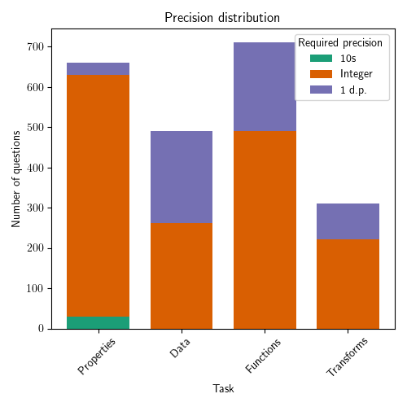

Accuracy scores on GRAB (2170 questions)
Overall performance on GRAB. Our benchmark proves challenging for frontier LMMs.
The highest performing model, Claude 3.5 Sonnet ü•á, attains an accuracy of just 21.7%.
Overview
Large multimodal models (LMMs) have exhibited proficiences across many visual tasks. Although numerous benchmarks exist to evaluate model performance, they increasing have insufficient headroom and are unfit to evaluate the next generation of frontier LMMs.
To overcome this, we present GRAB, a challenging benchmark focused on the tasks human analysts might typically perform when interpreting figures. Such tasks include estimating the mean, intercepts or correlations of functions and data series and performing transforms.
We evaluate a suite of 20 LMMs on GRAB via exact matching, finding it to be a challenging benchmark, with the current best model scoring just 21.7%.
GRAB Leaderboard
| Rank | Model | Overall | Properties | Functions | Series | Transforms |
| 1 | Claude 3.5 Sonnet ü•á | 21.7 | 41.8 | 15.5 | 11.0 | 10.0 |
| 2 | Gemini 1.5 Pro ü•à | 18.1 | 34.2 | 11.4 | 13.3 | 6.5 |
| 3 | Gemini 1.5 Flash ü•â | 15.6 | 28.5 | 11.5 | 8.4 | 9.0 |
| 4 | GPT-4o | 13.6 | 24.7 | 10.8 | 9.2 | 3.5 |
| 5 | Gemini 1.0 Pro Vision | 10.5 | 20.2 | 5.8 | 6.9 | 6.1 |
| 6 | GPT-4 Turbo | 10.0 | 18.5 | 8.5 | 4.9 | 3.5 |
| 7 | Reka Edge | 9.4 | 11.8 | 8.7 | 11.6 | 1.9 |
| 8 | Reka Flash | 9.3 | 13.2 | 10.1 | 6.3 | 3.9 |
| 9 | Claude 3 Sonnet | 9.2 | 15.3 | 8.6 | 4.5 | 4.8 |
| 10 | Claude 3 Haiku | 9.0 | 14.2 | 6.6 | 8.8 | 3.9 |
| 11 | GPT-4o mini | 8.7 | 15.8 | 6.8 | 5.7 | 2.9 |
| 12 | TransCore-M | 7.6 | 7.9 | 9.2 | 7.6 | 3.9 |
| 13 | Qwen-VL-Chat | 6.8 | 10.2 | 6.6 | 5.1 | 2.9 |
| 14 | Yi-VL-6b | 6.7 | 5.6 | 8.6 | 7.1 | 4.2 |
| 15 | LLaVA-1.5 13b | 6.5 | 5.0 | 7.7 | 8.4 | 3.9 |
| 16 | LLaVA-1.5 7b | 6.0 | 4.7 | 7.5 | 6.5 | 4.8 |
| 17 | Yi-VL-Chat 34b | 5.8 | 7.6 | 5.9 | 5.5 | 2.3 |
| 18 | CogVLM-Chat | 5.4 | 7.0 | 4.9 | 5.1 | 3.9 |
| 19 | OmniLMM-3b | 5.2 | 6.7 | 4.9 | 4.1 | 4.5 |
| 20 | Reka Core | 1.5 | 1.7 | 0.0 | 4.3 | 0.3 |
üéâ To add your results to the leaderboard, please contact this email.
GRAB Dataset
GRAB consists of 2170 questions centered around high-quality synthetic graphs. There are four key tasks in GRAB, which include questions covering 23 different graphs properties.
- Properties focuses on the analysis of features of individual functions and series
- Functions requires computing the mean of properties across multiple functions
- Series requires computing the mean of properties across multiple series
- Transforms involves determining the properties of a function after it has undergone a series of transforms
Examples of each GRAB task: Properties, Functions, Series, and Transforms.
Overview statistics.
GRAB properties and categories.

Distribution of required precision.
Experimental Results
Minor changes to evaluated accuracy are observed when an LLMs is used to parse the exact answer from the LMM output, suggesting the evaluated LMMs are good instruction followers.

For the better performing models, performance does clearly decrease as complexity increases from 0 to 3. For the weaker models, however, the results fluctuate around 10% across the entire complexity domain. In these cases, even the lowest complexity questions are too challenging.
BibTeX
@article{roberts2024grab,
title = {GRAB: A Challenging GRaph Analysis Benchmark for Large Multimodal Models},
author = {Jonathan Roberts, Kai Han and Samuel Albanie},
year = {2024},
journal = {arXiv preprint arXiv:}
}